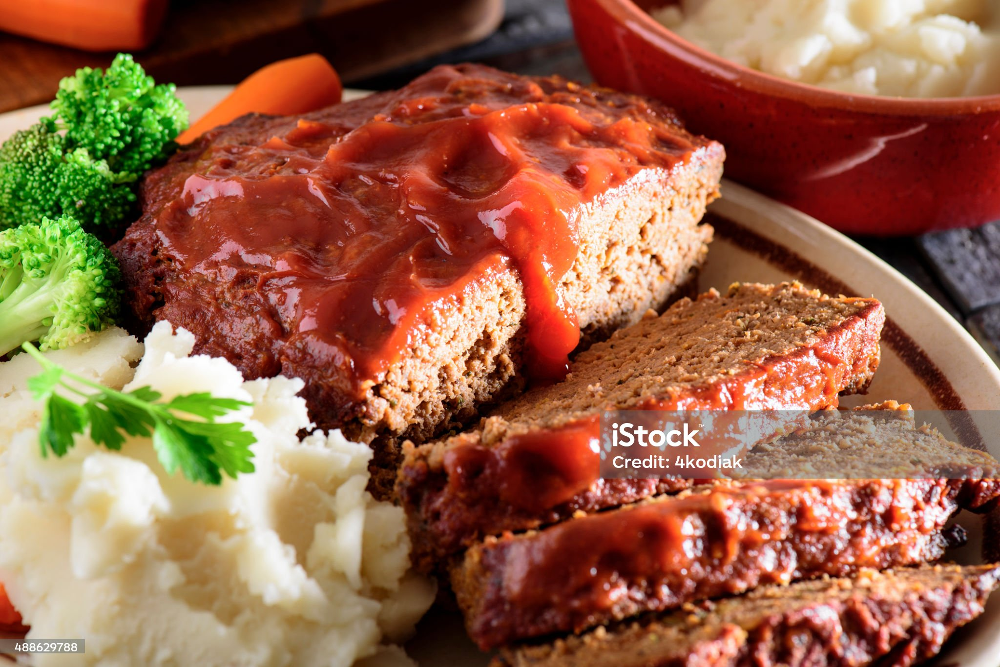

Meatloaf

Description
Meatloaf is a dish that consists of grounded meat and other ingredients, that are all formed into the shape of a loaf.
Some of the most common ingredients used in meatloaf are breadcrumbs, ketchup, minced onions, as well as ground beef.
Meatloaf Ingredients
- 2 lbs of ground beef
- 1 finely chopped, medium sized onion
- 2 large eggs
- 3 minced cloves of garlic
- 3 Tbsp of ketchup
- 3 Tbsp of finely chopped parsely
- 3/4 cup of Panko breadcrumbs
- 1/3 of milk
- 1 ½ tsp of salt
- 1 ½ tsp of Italian seasoning
- ¼ tsp of ground black pepper
- ½ tsp of ground paprika
Meatloaf Sauce Ingredients
- 3/4 cup of ketchup
- 1 ½ tsp of white vinegar
- 2 ½ Tbsp of brown sugar
- 1 tsp of garlic powder
- ½ tsp of onion powder
- ¼ tsp ground black pepper
- ¼ tsp of salt
Instructions
Steps:
- Line a 9"x5 loaf pan with parchment paper and preheat the oven to 375°F.
- In a large bowl, add all of the ingredients for the meatloaf. Mix well to combine.
- Add meat to the loaf pan, gently press meat down and shape evenly and bake meatloaf at 375°F for 40 minutes.
- In a small bowl, mix all of the ingredients together for the sauce. Spread the sauce over meatloaf then return to oven and bake additional 15-20 minutes or until the internal temperature is 160°F. Rest meatloaf 10 minutes before slicing. Drizzle with baking juices from the pan.
Back to Odin Recipes